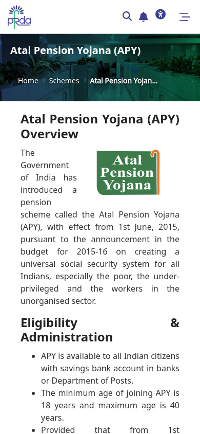

Atal Pension Yojana: eligibility, contributions and pension
Atal Pension Yojana is a contribution-based pension scheme for eligible Indian citizens. You choose a minimum monthly pension from ₹1,000 to ₹5,000 after age 60 and pay the prescribed contributions until then. It is not a free pension merely for opening an account.
Who can join?
The official PFRDA page requires Indian citizenship, age 18 to 40 and a savings account with a bank or Department of Posts. The FAQ says you can join until your 40th birthday, but not from the following day. Ask the branch to verify your exact date eligibility rather than rounding your age.
For new applications from October 1, 2022, a person who is or has been an income-tax payer is not eligible. Do not treat a low current salary alone as proof that the past-taxpayer rule does not apply.
Tax restrictions do not cancel every old account
PFRDA says subscribers who joined on or before September 30, 2022 can continue irrespective of income-tax status. It also says a person who was eligible when applying and becomes a taxpayer later can continue the account and contributions.
This distinction matters. The new-joining restriction is not a rule to close every existing taxpayer's APY account. If a wrong eligibility declaration is discovered, ask the official service provider about its closure and refund process.
What pension and family benefits are described?
The scheme gives a government-guaranteed minimum monthly pension of ₹1,000, ₹2,000, ₹3,000, ₹4,000 or ₹5,000 after age 60 until the subscriber's death. The chosen pension slab and joining age determine contributions.
After the subscriber dies, the spouse is entitled to the same pension until the spouse's death. After both die, the nominee receives the accumulated pension wealth under the scheme. Death before age 60 has different continuation and exit rules; do not apply the after-60 summary to every situation.
How contributions work
Contributions continue from joining until age 60 and are taken by auto-debit from the savings account. Monthly, quarterly and half-yearly frequencies are available. The exact amount depends on age, pension slab and payment frequency.
This guide does not quote one contribution amount for everyone. Ask the branch for the official table and a written confirmation of your chosen contribution. Keep enough balance and review the actual debit records.
How to enrol: step by step
Checked against the official PFRDA page on 19 October 2026.
- Check the official rules first on the PFRDA page: pfrda.org.in - Atal Pension Yojana. APY is open to Indian citizens aged 18-40 with a savings account in a bank or Department of Posts; income-tax payers cannot newly join (the 1 October 2022 rule).
- Confirm your citizenship, age and income-tax history before declaring eligibility - a false declaration can cost you the benefits.
- Choose your pension slab (Rs 1,000 to Rs 5,000 a month from age 60) and contribution frequency using the official contribution table for your age.
- Enrol through your own bank or post office: its branch, net banking or app (banks list APY under pension/Jan Suraksha schemes). Do not pay an unverified agent.
- Fill the APY registration form: nominee details, and consent to auto-debit of the contribution from your savings account at the chosen frequency.
- Keep the acknowledgement and your PRAN (Permanent Retirement Account Number) when issued. Keep enough balance for the auto-debit; missed contributions attract a small penalty and too many can freeze the account - check the costs section in this guide.

Steps 4-6 happen with your own bank or post office, so they are not shown as screenshots.
Video guides
We searched YouTube on 19 October 2026 for a step-by-step APY enrolment video in English and in Malayalam using the current rules. We could not verify one that is current and accurate, so we are not linking any rather than risk outdated or unrelated instructions.
Costs, missed contributions and inflation
APY requires regular savings, so it is not free. The FAQ says delayed monthly contributions attract ₹1 for each ₹100 or part of the contribution per month of delay. Account-maintenance and other applicable charges also need checking.
The current FAQ says non-payment does not itself close the account; overdue contributions and interest can be paid to regularise it. Charges can continue against the account balance. Do not rely on an older simplified frozen/closed timeline without checking the current rule.
A guaranteed nominal pension is not the same as a guaranteed future purchasing power. Compare the contribution commitment with your wider retirement needs and essential cash flow.
For Kerala readers
Keep this pension scheme separate from state social-security pensions and employer retirement plans. Having one account does not automatically make you eligible for another scheme. Use the official provider for account-specific advice.
Do not share OTPs, PINs or banking passwords with anyone promising guaranteed enrolment or an immediate pension release. No account was opened and no contribution paid for this article.
What changed since the original post?
We added the existing-account and later-taxpayer exceptions, the contribution requirement, exact birthday boundary and current missed-payment wording. The family-benefit summary is kept separate from death-before-60 rules.
Frequently asked questions
Will I get pension immediately?
No. The stated pension begins after 60, following contributions and scheme rules.
Does becoming a taxpayer later always cancel APY?
The official FAQ says an eligible existing subscriber can continue.
Is ₹5,000 automatic?
No. You choose a slab and pay its prescribed contribution.
Sources: Official PFRDA scheme · Current PFRDA questions and rules. Checked 7 October 2026.